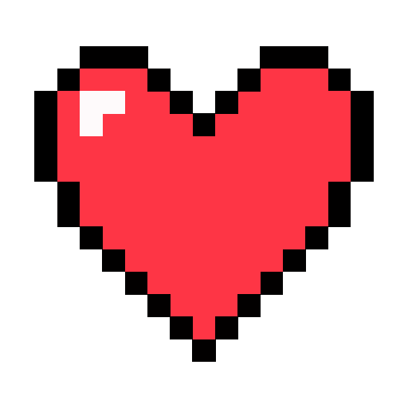

<!-- nav bar  -->

<!-- ❤️ pxl artisan                                      btn download art--> 
<nav class="flex items-center justify-between px-6 py-4">
  <!-- Left Side: Emoji and Text -->
  <div class="flex items-center justify-between  space-x-2">
    <!-- <span class="inline-block transform -rotate-90"><span class="text-2xl text-red-500"><span class="text-sm font-bold relative left-[0.1em] top-[-0.2em] ">&lt;</span>3</span></span> -->
    <span >
      
     </span>
    <span class="text-lg md:text-2xl font-semibold text-text relative top-[-0.2em]"  id="logo-text">pxl<span class="relative top-[-0.1em] text-3xl">.</span>artisan</span>
  </div>

  <!-- Right Side: Button with Rounded Div -->
  <div>
    <button class="flex items-center justify-center border-2 rounded-full bg-gradient-to-tr from-pink-600 to-purple-600 p-0.5 text-background">
      <span class="text-sm md:text-lg font-normal bg-background rounded-full px-2 md:px-4 py-1 md:py-2 text-text" (click)="captureDivAsImage()">Download</span>
    </button>
  </div>
</nav>

<!-- good to havev later div with canvas sizes buttons 8x8  16x16 32x32  -->
<!-- table with 16x16 -->
 <section class="flex justify-center m-8">
  <app-pixeltabel [rowCount]="rows" [columnCount]="cols" [hexColor]="currentColor()" ></app-pixeltabel>
 </section>

 <section class="flex flex-col justify-center gap-8 ">
  <div class="flex flex-row flex-wrap items-center gap-3 w-2/3 md:w-1/2 self-center">
    @for(color of colors; track color; let clrIdx = $index) {
      <!-- Color Tile -->
      <div
        id="swatch"
        [ngClass]="{
          'border-gray-200': selectedColorIndex !== clrIdx,
          'border-gray-800': selectedColorIndex === clrIdx
        }"
        class="border-2 rounded-lg pb-2 flex flex-col items-center self-center w-20  md:w-24 h-20 md:h-24 cursor-pointer"
        (click)="updateSelectedColor(clrIdx)"

      >
        <!-- Color Picker -->
      <div class="w-5/6 h-12 flex justify-center items-center  p-0 m-0 relative">
          <input
            type="color"
            class="absolute top-0 left-0 w-full h-full rounded-sm cursor-pointer mt-2"
            [value]="colors[clrIdx]"
            (click)="$event.stopPropagation()"
            (blur)="onColorChange($event, clrIdx)"
          />
        </div>
        

        <!-- Color Hex Code -->
        <div class="info pb-2 mt-2">
          <span class="font-light text-sm md:text-lg ">{{ colors[clrIdx] }}</span>
        </div>
      </div>
    }
   
  </div>
   <!-- Add Color Button -->
   <div
   class="border-2 border-gray-500 rounded-full flex justify-center self-center px-6 py-3 w-1/3 mb-10 cursor-pointer"
   (click)="addColorSwatch()"
 >
   <span class="font-extralight text-sm md:text-lg">Add +</span>
 </div>
</section>

